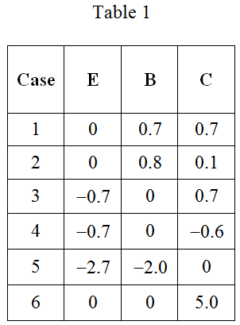
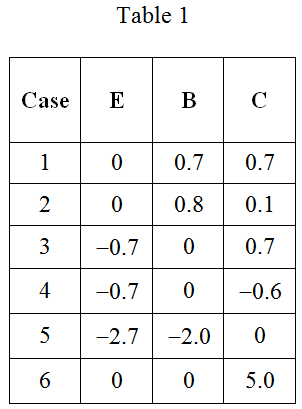
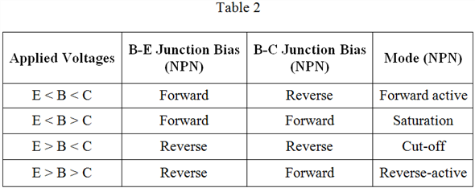
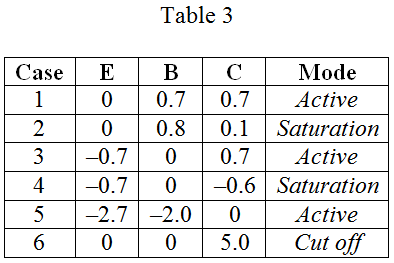

Refer the following table with the terminal voltages of various  transistors:
transistors:

Refer the following table with the terminal voltages of various transistors:

The modes of operation of a transistor can be described in terms of the applied voltages. There are four modes of operation for an npn transistor.
(i) Forward active: base is higher than emitter, collector is higher than base (in this mode the collector current is proportional to base current by ).
(ii) Saturation: base is higher than emitter but collector is not higher than base.
(iii) Cut-Off: base is lower than emitter, collector is higher than base. It means that the transistor is not letting conventional current to go through collector to emitter.
(iv) Reverse-active: base is lower than emitter, collector is lower than base. Reverse conventional current goes through the transistor.

Use Table 2 to write the modes of operation of the transistor with the voltages applied as in Table 1:
